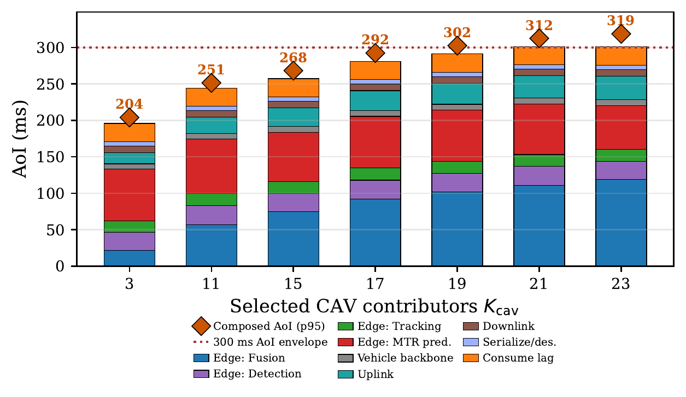
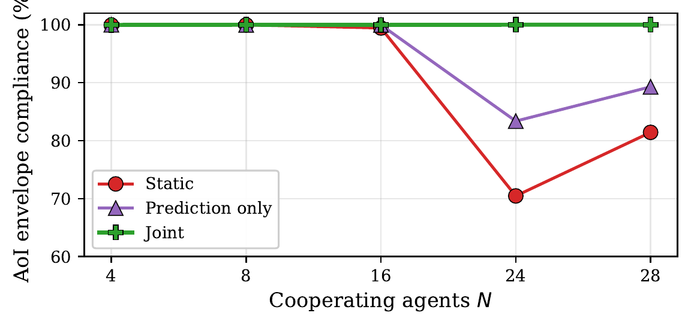
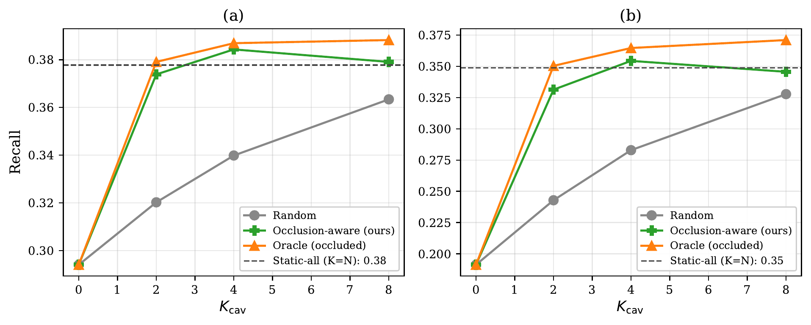
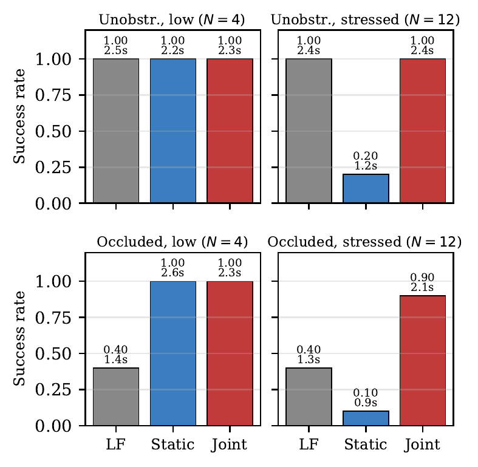

The planning algorithms inside an autonomous vehicle rely on on-board sensors whose line of sight is limited by traffic and occlusions. Edge-assisted creation of a unified world model, fusing information from connected autonomous vehicles (CAVs) and roadside units (RSUs) in a geographic locale, and the prediction of future trajectories can enhance planning; but this shared information is useful only if it reaches each vehicle planner within a tight Age of Information (AoI) budget. The state of the art fuses per vehicle: each CAV fuses inputs from other actors locally, which limits both scalability with actor count and quality of results.
We present Conductor, an edge service that creates a unified world model from the perspective of a fixed anchor (an RSU) in a locale and predicts future trajectories of the actors in it. Conductor adheres to the AoI budget by dynamically limiting the number of contributing vehicles to those that add the most evidence beyond the RSU's view, using an occlusion-aware selector built from confidence maps the fusion model already produces, paired with a runtime controller that adapts both the number of fused inputs and the amount of fresh trajectory prediction each cycle. Across evaluated traffic scenarios with up to 31 CAVs, the joint selector-controller meets the AoI safety bound, with fusion fidelity close to an Oracle and much better than a random selector under the same constraint.



@inproceedings{landle2026conductor,
title = {Scalable Edge-assisted Fusion and Path Prediction
for Connected Autonomous Vehicles},
author = {Landle, Tyler and Isenberg, Jackson and Amarnath, Chandramouli
and Chatterjee, Abhijit and Daglis, Alexandros and Ramachandran, Umakishore},
booktitle = {Proceedings of the ACM/IEEE Symposium on Edge Computing (SEC)},
year = {2026},
note = {To appear}
}